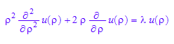
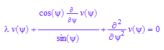

![u[`ψψ`]/`ρ`^2 + (2*u[`ρ`])/`ρ` + u[`ρ`, `ρ`] + (cos(`ψ`)*u[`ψ`])/(`ρ`^2*sin(`ψ`)) = 0](TempEsfera_images/math2.png)
Temperatura estacionaria en una esfera
En esta notebook desarrollamos el tema del título tal como lo expone Simmons.
Vamos a desarrollar esta sustitución que sugiere Simmons. Primero pongamos la propuesta de separación de variables
T:=u(`ρ`)*v(Simplify(`ψ`))
Traigamos el laplaciano en esféricas de la notebook que hicimos a tal efecto
(2/`ρ`)*u[`ρ`] + u[`ψψ`]/`ρ`^2 + u[`ρ`, `ρ`] + u[`θ`, `θ`]/(`ρ`^2*sin(`ψ`)^2) + (cos(`ψ`)*u[`ψ`])/(`ρ`^2*sin(`ψ`))
Como Simmons supone que la temperatura en la superficie solo depende de la latitud psi, es intuitivamente válido que en el interior tendrál la misma simetría. Luego podemos eliminar los términos en que aparece la derivada de theta. Además, como el estado es estacionario debemos considerar la ecuación igualada a 0
u[`ψψ`]/`ρ`^2 + (2*u[`ρ`])/`ρ` + u[`ρ`, `ρ`] + (cos(`ψ`)*u[`ψ`])/(`ρ`^2*sin(`ψ`))=0
Conviene multiplicar por rho^2
expand(%*`ρ`^2)
Tenemos que aplicarle este operador diferencia a nuestra función T
`ρ`^2*diff(diff(T,`ρ`),`ρ`)+2*`ρ`*diff(T,`ρ`)+diff(diff(T, `ψ`), `ψ`)+diff(T, `ψ`)*cos(`ψ`)/sin(`ψ`)=0
En este caso, como en otros similares, se trata de separar esta suma como suma de términos que dependen de sólo una de las variables. Esto se logra dividiendo por T
expand(%/T)
Los términos primero y cuarto varían respecto a una variable que es independiente respecto a la sola variable de la cual dependen el segundo y tercer miembro. De modo que los términos primero y cuarto deben sumar una constante, llamemos esta constante lambda, y el tercero más el segundo debe ser -lambda. Tenemos así dos ecuaciones
EQ1:=(`ρ`^2*diff(u(`ρ`), `ρ`, `ρ`))/u(`ρ`) + (2*`ρ`*diff(u(`ρ`), `ρ`))/u(`ρ`) = `λ`
EQ2:= diff(v(`ψ`), `ψ`, `ψ`)/v(`ψ`)+ (cos(`ψ`)*diff(v(`ψ`), `ψ`))/(sin(`ψ`)*v(`ψ`)) = -`λ`
Acomodemos las ecuaciones un poco
expand(EQ1*u(`ρ`))

EQ1:=`ρ`^2*diff(u(`ρ`), `ρ`, `ρ`) + 2*`ρ`*diff(u(`ρ`), `ρ`) - `λ`*u(`ρ`)=0
expand(EQ2*v(`ψ`))
EQ2:=(cos(`ψ`)*diff(v(`ψ`), `ψ`))/sin(`ψ`) + diff(v(`ψ`), `ψ`, `ψ`) +`λ`*v(`ψ`)=0

La ecuación EQ1 es una ecuación de Euler . Ya sabemos que la solución a la ecuación de Euler son potencias. Averiguemos cual
u(`ρ`):=`ρ`^r
EQ1
assume(`ρ`>0);Expos:=solve(EQ1,r)

De modo que la solución general sería
u(`ρ`):=c1*`ρ`^(op(Expos,1))+c2*`ρ`^(op(Expos,2))
Estamos buscando una solución con sentido físico, de modo que una solución que tiende a infinito en 0 no nos sirve, pues la temperatura no satisfacería esto. Esto nos dice que debemos hacer c(2)=0
u(`ρ`):=c1*`ρ`^(op(Expos,1))
Además el otro exponente debería ser positivo, ¿Cuando ocurre?
assume(`λ` in R_);solve((4*`λ` + 1)^(1/2)/2 - 1/2>0,`λ`)
Asumamos lambda allí y expresemos lambda por medio del exponente
assume(`λ` in %)
assume(r>0);solve(r=op(Expos,1),`λ`)
EQ3:=subs(EQ2,`λ`=factor(op(%,1)))
Ahora un poco de magia, queremos hacer el cambio de variable independiente x=cos(psi) o phi=arccos(psi)
v(`ψ`):=v(cos(`ψ`))
EQ3

EQ4:=subs(%,cos(`ψ`)=x)
assume(abs(x)<1)
subs(EQ4,sin(`ψ`) =sqrt(1-x^2))
Que es la ecuación de Legendre, si queremos que nuestra solución se comporte bien en x=-1 y x=1 (psi=-pi/2 , psi=pi/2 -los polos) rdebe ser un entero positivo,
en cuyo caso hay una solución que es un polinomio (Legendre)
EQ5:=subs(%,r=n)
assume(n in N_)
Las soluciones son c1*u^n*Pn, con Pn polinomio de Legendre. Leer las conclusiones desde "el Simmons"